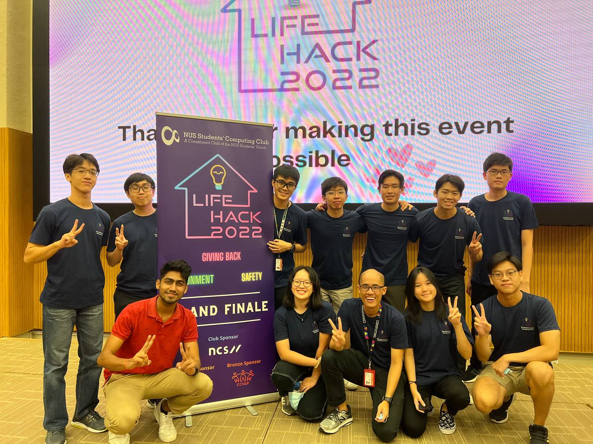

Student Development
The Student Development Wing comprises three cells - Academic Liaison, Community Engagement and Rag &
Flag*, with an
overall vision of 'creating meaningful experiences for all School of Computing students to better formulate
their academic and community interests'.
We focus on providing an environment for students to achieve holistic development and relish student life
through various events, initiatives and real time opportunities.
If you are passionate about creating meaningful opportunities for students to better achieve an all-rounded
education at School of Computing, the Student Dev Wing is something you should definitely consider.
This year, we introduced 2 major initiatives (SoCollab & Wikithon) - to offer an exciting platform for
students to deepen their knowledge about social and academic matters!
Lastly, join Computing Club to form lifelong bonds and make memories you are certain to cherish, for the
rest of your life!
* This is a newly defined role in the structure. Drop us an email at elections@nuscomputing.com to find out more!
Introduction
As the Vice President of Student Development [VP(SD)], you head the Student Development
Wing, which comprises of 3 Cells: Academic Liaison, Community Engagement and Rag & Flag.
These cells are filled with exciting events that ultimately allow School of Computing students to
formulate their academic and community interests, at the same time, achieving holistic education and an
all rounded student life.
Roles
The VP(SD) is primarily in charge of carving out the overall vision of the wing,
making sure all decisions that the faculty makes are in the best interest of the student body. While the
VP is more involved in the planning process, the Directors play a supporting role in ensuring that these
plans are realistic, executable and deliverable.
As VP(SD), you would be supporting your cell's events and planning for any new initiatives
you wish to take.
You oversee all components of the wing from Finances to Logistics ensuring everything runs
smoothly by making sure your Directors and Project Directors are well aware of the deliverables to meet.
Experience
My experience as VP(SD) has definitely been extremely meaningful because I had the chance to play a part
in allowing students to achieve an all rounded education at School of Computing - at the same time
educating them on the importance of community engagement.
Throughout my term, I communicated with a myriad of stakeholders, only to see myself become more mature
and confident. I saw myself become a more robust leader who is not afraid of bringing out initiatives or
planning for change. I became more decisive and gained significant experience in time management and
multitasking.
Overall, I have certainly made lifelong bonds and created precious memories - I will always look back
at them.
Computing Club has gifted me with some of the closest friends and I am forever thankful to have started
on this journey back in Year 1!
Introduction
The Academic Liaison Cell Functions as a bridge between student body and the school with
regards to Academic matters and facilitates the academic ambitions of the club.
It also hosts Academic events to allow students to explore new avenues and better formulate their
academic interests. We have 4 main events, Career Launchpad meant to provide students with informative
talks and webinars from external organizations, Lifehack which is an annual hackathon hosted by NUS
Computing club, Mock Practicals which helps students prepare for their practical exams and lastly Winter
workshop which provides workshops to students for higher level modules.
We will go beyond to provide students with all the opportunities in honing their technical skills and
being ever ready for a career in today's transformative tech industry.
Roles and Experience
[David, Director]:
Fulfilling and memorable would be two words that I would use to describe my journey in Computing Club. I
have learnt how to see and plan things on a macro scale and most importantly, learnt how to work
together as a team and clearly communicate my ideas to get the message across. Plenty of get-together
sessions really made journey very much more memorable. Favorite memory would definitely have to be our
each and every cohesion. Work hard, play hard!
[Joel, Deputy Director]:
My Experience has been great so far. I made many friends through Computing Club as well as through
interacting with many of my peers through the events we held. The biggest takeaway is definitely being
able to work with other computing students and helping them in any way we can. It is a responsibility
that may not have any tangible benefits but the friends I made and the impact of what we do makes it
worth it.
Events
Winter Workshops
Conducted in December for Year 1 students, we provide prep courses for common Y1S2 mods such as CS2030, CS2040,MA2100 and MA1521. This allows students to better prepare themselves for Level 2 Modules and sharpen their fundamentals of Y1S1 Modules.
Career Launchpad
A series of webinars and talks from various industry speakers to help answer and educate students on the different paths and career options. This allows students to be more aware about current industry trends and make better decisions about the specialisations and domains they are interested to explore.
SoCollab
SoCollab is a new initiative by Academic Liaison Wing that comprises three subcomponents (Senior Sharing, Medium Publication & Pilot Projects). It acts as a platform to provide students with opportunities to develop their technical skills, learn about current industry trends and grow as an individual.
Lifehack '22
Flagship Hackathon of NUS Students' Computing Club, that offers students a platform to come up with an innovative software solution within 24 hours. This year we had about 182 Teams joining us - making it one of the largest student-run hackathon in Singapore.

Introduction
The Community Engagement Cell aims to provide an avenue for students to support
beneficiaries
in need and incorporate our knowledge and technology to help those in need. Under our cell, we help to
oversee the Community Engagement Initiatives under NUS Students' Computing Club. These include our
Children and Elderly service projects and events under the Flag and External Committees to raise funds
and awareness for underprivileged communities.
With an overall aim of promoting a culture of giving students a platform to contribute to the society,
we hope to instil in students an interest and commitment towards the various community segments in
Singapore.
Experience
[Xueting, Director]:
It has been a very fulfilling experience working with our fellow computing students who are passionate
to serve the community. Through the various projects that we've done, I was able to learn more about the
beneficiaries that we have engaged with and continue to challenge my perspective on ways to effectively
serve our community!
[Yangken, Deputy Director]:
For myself, the past year has been a really meaningful experience to oversee different events and
contribute to our community. In the past, I have generally joined these activities as a volunteer but
being able to plan and organize events allows you to impact the community from a different light. Even
though it can be hectic managing multiple concurrent events, it has been a good learning experience
working with different stakeholders to better understand and serve our community. Fav memory are all of
the wing cohesions of course :D
Events
Flag Committee
The Flag Committee aims to raise funds and awareness for underprivileged communities. This year, we partnered with MINDS Fernvale Gardens School, a school for children with intellectual disabilities. During our term, we were able to raise funds through events such as the Valentines Day Sale and also interact with the children directly on Beneficiary Engagement Day.
- Valentines Day
- Merchandise Sale
- Beneficiary Engagement Day
- Flag Day


Elderly Service Committee
The Elderly Service Committee aims to better connect with our elderly and work towards a more inclusive society amidst our increasingly digitised world. This year, we partnered with Heartware Network to organise workshops to educate our elderly on technology and help them better connect with their loved ones.
- Digital Workshop


Children Service Committee
The Children Service Committee aims to empower children from underprivileged backgrounds to kickstart their interest in programming. Through events such as CodeCamp, students were given the opportunity to educate children on the fundamentals of programming and develop their interest through the meaningful enrichment provided.
- CodeCamp


External Liaison Committee
The External Liaison Committee is a new initiative by the 24th MC, the team works with external organisations to create opportunities for students to utilise their technical knowledge for our community. This year, we worked with SocialCollab to provide a platform for students to ideate and use technical solutions to alleviate the issues within marginalised communities.
- SocialCollab Wikithon Event